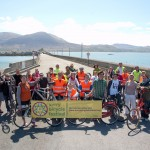

 Annual Picnic Cycle to Fenit Sunday 22 September 2:00 pm Tralee Town Square Car Free Day, Fenit, Tralee With something of the momentous occasion about it, this year we’ll cycle to Fenit on the first phase of the Tralee-Fenit Greenway. A long-time coming, we can celebrate in Fenit with a cuppa and a swim if you fancy.